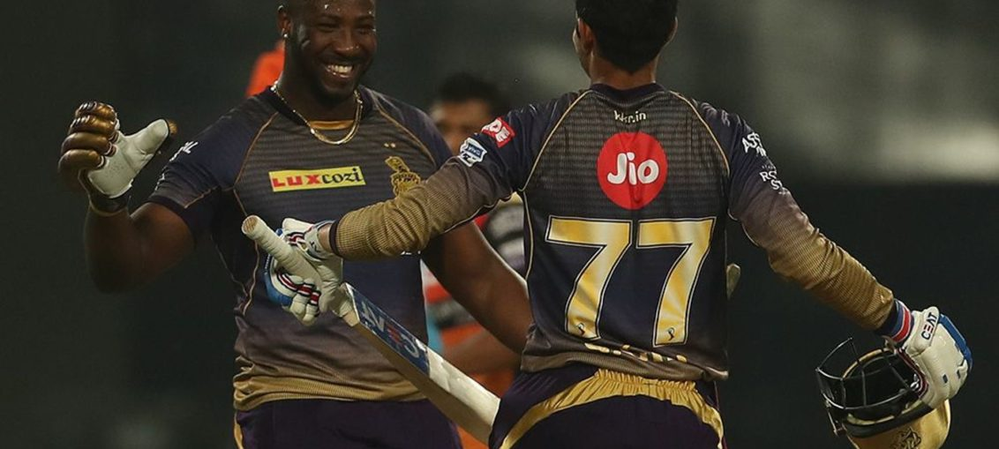

Posted at Date: May 07, 2019
Credit : রাইট স্পোর্টস ওয়েব ডেস্ক
যুবভারতীতে অনূর্ধ্ব ১৭ বিশ্বকাপের অন্যতম নায়ককে দেখুন আজ মেসিদের বিরুদ্ধে

কেকেআর –২৩২/২ কলকাতার বুকে কলকাতার প্রিয় ব্রাজিলকে হারাতে হ্যাটট্রিক, বিশ্বকাপের সেমিফাইনালে। তার তিন দিন পর, ফাইনালে স্পেনের বিরুদ্ধে ফিরে-আসা শুরু তাঁরই পায়ে।(
আর, ব্রাজিলের বিরুদ্ধে সেমিফাইনালের আগে কোয়ার্টার ফাইনালে আমেরিকা যুক্তরাষ্ট্রের বিরুদ্ধেও হ্যাটট্রিক করেছিলেন মারগাও-তে। নকআউটে মোট সাত গোল, লিগ পর্যায়ে মেহিকোর বিরুদ্ধে একটি – প্রতিযোগিতায় সর্বোচ্চ মোট আট গোলের পাঁচটিই দেখেছিল বিবেকানন্দ যুবভারতী স্টেডিয়াম। রিয়ান ব্রিউস্টারকে নিশ্চয়ই ভোলেনি কলকাতা। বিশ্বকাপে আট গোলের মালিকের বয়স তখন সতের হলেই বা! এখন তিনি উনিশ এবং আজ, মঙ্গলরাতে তিনি নামবেন বার্সেলোনার বিরুদ্ধে, লিভারপুলের হয়ে, অ্যানফিল্ডে, জানিয়ে দিয়েছেন লিভারপুলের কোচ। চ্যাম্পিয়নস লিগের সেমিফাইনাল। ০-৩ পিছিয়ে দল, কাম্প নু-তে প্রথম লেগে লিওনেল মেসির জোড়া এবং লিভারপুলের প্রাক্তন লুইস সুয়ারেজের গোলে। প্রিমিয়ার লিগের খেতাবি লড়াই আগামী রবিবার, যেখানে জিতলেও লিভারপুল নিশ্চিত নয় যে খেতাব আসতে পারে কারণ, এই মুহূর্তে এক পয়েন্টে এগিয়ে ম্যানচেস্টার সিটি এবং শেষ ম্যাচ পয়েন্ট না হারালে তাই সিটিই চ্যাম্পিয়ন। গতবারের মতো চ্যাম্পিয়নস লিগ ফাইনালে কি অন্তত পৌঁছতে পারবে য়ুরগেন ক্লোপের দল, চার গোলে জিতে? বা, অন্তত ৩-০ জিতে অতিরিক্ত সময়ে খেলা নিয়ে যেতে, পারলে টাইব্রেকারেও?
যদি পারে লিভারপুল, ব্রিউস্টারকে নিতে হবে উল্লেখযোগ্য ভূমিকা, চ্যাম্পিয়নস লিগে নিজের অভিষেক ম্যাচেই! ১৪ মাস মাঠের বাইরে ছিলেন উনিশের ব্রিউস্টার। গোড়ালি এবং হাঁটুতে অস্ত্রোপচার হয়েছে। ক্লোপ জানিয়েছেন, ‘রিয়ান তৈরি। প্রতি দিনই উন্নতি করেছে, চোট সারিয়ে ফেরার পর। শেষ তিন-চার সপ্তাহ ধরে দুর্দান্ত ছন্দে। পরের মরসুমে তো একশো শতাংশ নিশ্চিত, শুরু থেকেই খেলবে। সেটা ওকে বলেও দিয়েছি। এখন ব্যাপারটা অন্য। কঠিন পরিস্থিতিতে ওকে খেলতে হবে, নামানো হতে পারে যে কোনও মুহূর্তে, স্ট্রাইকার হিসাবেই। বেঞ্চে থাকা মানেই মাঠে আসার সুযোগ।’ মোহামেদ সালাহ আর রোবের্তো ফির্মিনো নেই। লিভারপুল হয়ত বার্সেলোনার বিরুদ্ধে শুরু করবে জেরদান শাকিরিকে নিয়েই, পরে আসতে পারেন ব্রিউস্টার। কিংবা, বার্সেলোনাকে চমকে দিতে, শুরুতেও! যুবভারতীতে অনূর্ধ্ব১৭ বিশ্বকাপের সেমিফাইনালের ৬৩ হাজার ৮৮১ জন বা, ফাইনালে হাজির ৬৬ হাজার৬৮৪ জনের মধ্যে কতজন আজ চোখ রাখবেন রাত সাড়ে বারটা থেকে, টেলিভিশনের পর্দায়, সে দিনের সেই সতেরর বাচ্চা ছেলেকে অ্যানফিল্ডে চ্যাম্পিয়নস লিগ লেমিফাইনালে লিভারপুলের হয়ে খেলতে দেখতে?
আর, অ্যানফিল্ডে আজ রাতে গোল পেলে কলকাতাকেও নিশ্চিতভাবেই মনে পড়বে, আট গোলে অনূর্ধ্ব ১৭ বিশ্বকাপের অ্যাডিডাস গোল্ডেন বুট পাওয়া ব্রিউস্টারের। বিশ্বের দরবারে নিজেকে চিনিয়েছিলেন যে পাঁচ গোল করে, এই কলকাতার যুবভারতীতেই!
Top Stories

Calcutta Sports Journalists' Club requests the pleasure of your company at its annual awards functionMore...

Jasprit Bumrah has been declared fit and he will now be available for selection for India's third Test against England at Trent Bridge. More...

Ronaldo has increased Juventus' standing among Europe's elite. More...